{% include sections/header.html %}
{% include sections/fourteen-eyes.html %}
{% include sections/key-disclosure-law.html %}
在此所列的供应商都不在美国境内，他们都使用加密，接受 Bitcoin 付款，支援 OpenVPN 而且采不记录用户活动的政策。
{% assign eur_to_usd = 1.14 %}
注意：使用 VPN 服务无法匿名上网，但它可以提供较佳的隐私控制。 VPN 不是用来作违法活动的工具，不能仅依赖供应商的「不记录用户活动」政策。
令状金丝雀（warrant canary）是有些组织公布一份文件来声明他们在一段特定期间内，并未接到任何秘密的官方命令。如果这份文件未能及时定期更新，那么用户可以假设该组织可能收到了不可公开的秘密传票，此时应该停止使用他们提供的网路服务。
相关案例：
https://proxy.sh/canary https://www.ivpn.net/resources/canary.txt https://www.bolehvpn.net/canary.txt https://lokun.is/canary.txt https://www.ipredator.se/static/downloads/canary.txt
相关资讯
{% include card.html color="success"
title="Tor 洋葱浏览器"
image="assets/img/tools/Tor-Project.png"
url="https://www.torproject.org/"
tor="http://expyuzz4wqqyqhjn.onion"
footer='支援作业系统: Windows, macOS, Linux,
iOS ,
Android ,
OpenBSD. '
description="如果你需要额外的匿名层保护，则 Tor 浏览器就是你最佳的选项。它是利用火狐浏览器作进一步的调配，其事先预设安装好了一些隐私保护的附加元件、加密与进阶的代理器。"
%}
{% include card.html color='primary'
title='Mozilla Firefox'
image='assets/img/tools/Firefox.png'
url='https://www.firefox.com/'
footer='支援作业系统: Windows, macOS, Linux, Android, iOS, BSD.'
description='Firefox 火狐浏览器是一个快速、可靠、开源且尊重用户隐私的上网工具。别忘了依照我们的建议来调整火狐底下的设定：
以及
和安装
'
%}
{% include card.html color='warning'
title='Brave'
image='assets/img/tools/Brave.png'
url='https://www.brave.com/'
footer='支援作业系统: Windows, macOS, Linux, Android, iOS.'
description='新问世的开源浏览器"Brave" 会自动地封锁广告与追踪器，其效能比你目前所用的浏览器更为快速安全。Brave 为基于 Chromium 所开发的软体。'
%}
你使用的浏览器传送了许多资讯，在数千百万使用者当中可以容易地辨识出不同人。
当访问一个网站时，浏览器会自行地送出一些本身的设定资讯，例如有哪些字型可用，浏览器类型、安装的附加元件等。如果这些组合出来的资讯非常独特，很容易让其它人不需要 cookies 小程式就可以辨识与追踪你。电子前锋基金会 EFF 创建了 Panopticlick工具 来测试浏览器的独特程度。
立即测试你正在用的浏览器吧
你需要找出 大多数浏览器 会回报什么资料,然后利用相近的人口使用资讯，再把这些变数放回你的浏览器当中。这意谓着和其它人使用相同的字体、外挂元件、附加元件等，以扩大使用者基数。你也该利用欺瞒的随机浏网器字串 以符合最大的使用者基数。你需要有相同的设定启动和取消，例如 DNT 与 WebGL 功能。这样让你使用的浏览器看起来会像大多数人用的差不多。取消 JavaScript、使用 Linux 或是进一步使用 TBB，容易让你的浏览器从一般普罗群众中突显出来。
现代的网页浏览器未依确保个人在万维网的隐私安全来打造。若很担心浏览器留下的独特特征指纹辨识，最实际的作法是使用
相关资讯
WebRTC 是一种新的通讯协议，其依靠 JavaScript 程式。它可能会泄漏 VPN 用户真实的 IP 位置资讯。
有些软体，如 NoScript 可以阻止这个漏洞。但为了安全起见，直接关闭这个协议也是不错的作法。
立即测试你正在用的浏览器吧
如何在火狐浏览器下取消 WebRTC？
简单说：在 "about:config" 内，将 "media.peerconnection.enabled" 设为 "false"。
说明:
在浏览器的网址列输入 "about:config" 并点击 enter 键
点击"I'll be careful, I promise!"按钮
搜寻"media.peerconnection.enabled"
双击这条资讯, "Value"栏位现在应该变成了"false"
完成了，再作一次 WebRTC 漏洞测试吧
如果要确认每一个与 WebRTC 相关设定真的关闭了，可以再进行以下的设定更动：
media.peerconnection.turn.disable = true
media.peerconnection.use_document_iceservers = false
media.peerconnection.video.enabled = false
media.peerconnection.identity.timeout = 1
现在你已百分百地将 WebRTC 功能取消了。
再次测试你的浏览器吧
如何解决 Google Chrome 底下的 WebRTC 漏洞呢？
Chrome 浏览器下无法完全取消 WebRTC，但可以透过套件变更其路由设定（与防止泄漏）。有两种开源的方案为：WebRTC Leak Prevent （需依情况来调整设定选项），和 uBlock Origin （请选 "Prevent WebRTC from leaking local IP addresses"）。
那其它的浏览器呢?
苹果 iOS 作业系统下的 Chrome、Internet Explorer 与 Safari 目前尚未采用 WebRTC。
利用优质的火狐浏览器附加元件来改善隐私保护
安装 "Privacy Badger" 阻止被追踪
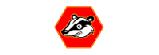
Privacy Badger 可用来阻止广告商或其它第三方追踪器偷偷地追踪用户浏览哪些网站网页。当你浏览网站时 Privacy Badger 透过检查外部网站资源的请求了解追踪器状况。当用户浏网时，Privacy Badger 会检查外部的网站请求。请注意，Google Analytics 被 Privacy Badger 视为首先相关者（first-party），这表示如果你未用其它封锁器（例如 uBlock Origin），则 Google Analytics 就不会遭到封锁。
https://www.eff.org/privacybadger/
利用 "uBlock Origin" 来封锁广告与追踪器
它是一个有效寛谱封锁器 ，容易在记忆体上执行，也比一般市面上的封锁器更可负载入上千个过滤器当中。这套软体并没有商业化的打算而且是完全开源 。不只在火狐，uBlock Origin 也可以用在其它的浏览器如 Safari、Opera、Chromium 等等。不像 AdBlock Plus，uBlock 并没有所谓。「可接受的广告」 。
https://addons.mozilla.org/firefox/addon/ublock-origin/
利用"Cookie AutoDelete"自动删除 Cookies
自动地移除储存在已开启分页中不需再用到的 cookies。连同徘来回期间、以及用来监视用户的资讯都会被清除。
https://addons.mozilla.org/firefox/addon/cookie-autodelete/
使用"HTTPS Everywhere"加密连线
Firefox, Chrome, Opera 都支援的浏览器延伸元件，可以对一些主要网站之间的网路连线予以加密，让你的浏览更为安全。它是 Tor 计划与电子前锋基金会 EFF 的一个合作专案。
https://www.eff.org/https-everywhere
利用 "Decentraleyes" 来关闭内容传递网路
在本地机器上仿效内容传递网路以拦截对外请求，找出所需的资源再将其注入环境下。这些步骤会同时自发自动地发生而不必事前的设定。原始码：GitLab (self-hosted) .
https://addons.mozilla.org/firefox/addon/decentraleyes/
下面的附加元件要求与使用者之间的许多互动才能设定成功。有些网站除非你已设好了这些附加元件否则无法顺利工作。
利用"uMatrix"来停止跨站的请求
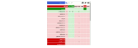
许多网站或许整合了一些功能，让其它别的网站可以追踪你，例如脸书的按赞按钮或是 Google 流量分析工具。uMatrix 则让你可以掌握造访网站上来自其它网站的追踪请求，赋予更佳更大的决定权力来控制你愿意在网路上流出的资料。
https://addons.mozilla.org/firefox/addon/umatrix/
利用"NoScript Security Suite"套件完整控制
高度客制化的外挂工具可以选择让 Javascript、Java 与 Flash 只能在所信任的网站上执行。但它并不适合一般的用户，需足够知识才能进行适当设定。
https://addons.mozilla.org/firefox/addon/noscript/
这部份是关于about:config 的隐私设定调整整理。我们将示范如何强化火孤浏览器的隐私保护。
准备:
在浏览器的网址列输入 "about:config" 并点击 enter 键
点击"I'll be careful, I promise!"按钮
依照下方的指示操作...
开始动手:
privacy.firstparty.isolate = true
Tor Uplift 效用的结果，它可隔绝主要访问网域中所有浏览器辨识器来源（如 cookies），并期能可阻档跨域名的追踪。（如果已使用外挂 "Cookie AutoDelete"，若使用 Firefox v58 之前的版本，请不要打开此功能。）
privacy.resistFingerprinting = true
privacy.trackingprotection.enabled = true
Mozilla 新内建的追踪保护功能，其利用 Disconnect.me 过滤名单，但如果你已使用其它第三方的屏滤器如 uBlock Origin，其效能就会重复多余，因此你可以将之设为关闭。
browser.cache.offline.enable = false
browser.safebrowsing.malware.enabled = false
取消 Google 安全浏览的恶意软体检查。这会有安全上的风险，但可改善隐私
browser.safebrowsing.phishing.enabled = false
取消 Google 安全浏览与防钓鱼保护。这会有安全上的风险，但可改善隐私
browser.send_pings = false
browser.sessionstore.max_tabs_undo = 0
尽管 Firefox 设定不记录浏览资讯，但在用户关闭浏覧器分页之前，这些资讯仍会暂存在选单 > 浏覧历史 > 近期关闭的分页底下
browser.urlbar.speculativeConnect.enabled = false
关闭自动完成的 URLs 预载，当用户在网址列输入资讯时，Firefox 会自行预载，有人担心这些浏览器自动建议的网址并非是用户想要连上的网站。出处来源
dom.battery.enabled = false
dom.event.clipboardevents.enabled = false
取消让网站在当你从某网页中复制、贴上是剪下任何内容时，会发出通知。这会让他们知道网页的哪一部份被挑选。
geo.enabled = false
geo.enabled = false
media.eme.enabled = false
关闭由Disables playback of DRM 保护的 HTML5 内容播放功能。其如启动，会自动地载入 Google 公司提供的Widevine Content Decryption Module详情
如果其安装并在火狐中启动，DRM-保护的内容需要 Adobe Flash 或 Microsoft Silverlight NPAPI 外挂来播放
media.gmp-widevinecdm.enabled = false
关闭 Google 公司提供的 Widevine Content Decryption 模组，它是用来播放 DRM 保护的内容。详情
media.navigator.enabled = false
network.cookie.cookieBehavior = 1
取消 cookies
0 = 默认打开所有 cookies
1 = 仅接受原访问网站之 cookies (封鑜第三方网站 cookies)
2 = 默认关闭所有 cookies
network.cookie.lifetimePolicy = 2
cookies 在期间结束后被删除
0 = Accept cookies normally
1 = Prompt for each cookie
2 = Accept for current session only
3 = Accept for N days
network.http.referer.trimmingPolicy = 2
仅传送Referer 表头中的格式、主机和端口。
0 = Send the full URL in the Referer header
1 = Send the URL without its query string in the Referer header
2 = Send only the scheme, host, and port in the Referer header
network.http.referer.XOriginPolicy = 2
只有当主机名完全相符时才会送传 Referer 表头。(请注意：如察觉有明显的外漏状况，也许可以试试1 结合下方的 XOriginTrimmingPolicy 微调。) 来源出处
0 = Send Referer in all cases
1 = Send Referer to same eTLD sites
2 = Send Referer only when the full hostnames match
network.http.referer.XOriginTrimmingPolicy = 2
当在不同的网站来源间传送 Referer，仅在不同来源请求的Referer表头传送格式、主机和端口。Source
0 = Send full url in Referer
1 = Send url without query string in Referer
2 = Only send scheme, host, and port in Referer
webgl.disabled = true
browser.sessionstore.privacy_level = 2
此偏好控制用于储存一段期间的额外资讯：含内容形式、滚动条位置、cookies 和上传数据资料。 详情
0 = Store extra session data for any site. (Default starting with Firefox 4.)
1 = Store extra session data for unencrypted (non-HTTPS) sites only. (Default before Firefox 4.)
2 = Never store extra session data.
network.IDN_show_punycode = true
不会呈现 IDNs Punycode 等量，否则易陷入难以察觉的钓鱼攻击。来源出处
extensions.blocklist.url = https://blocklists.settings.services.mozilla.com/v1/blocklist/3/%20/%20/
在请求有害的延伸封锁清单时，限制可识别的资讯总量。
可选择整个取消封锁清单，将原本extensions.blocklist.enabled 切换为 false，以提高隐私，但它会降低安全性。Source
相关资讯
ffprofile.com - Helps you to create a Firefox profile with the defaults you like.mozillazine.org - Security and privacy-related preferences. user.js Firefox hardening stuff - This is a user.js configuration file for Mozilla Firefox that's supposed to harden Firefox's settings and make it more secure.Privacy Settings - A Firefox add-on to alter built-in privacy settings easily with a toolbar panel.
这里列出的供应商都在美国境外营运，并且支援 SMTP TLS 。这份表格经过整理。绝不要随意信任任何公司，多利用加密通讯。
电邮服务商
URL
成立时间
伺服器位置
空间容量
价格 / 年费
比特币付费
加密功能
自定域名
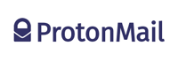
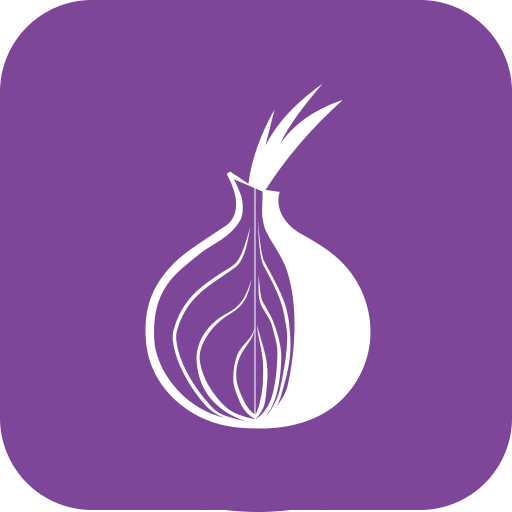
2013
500 MB
Free 接受 内建 Yes
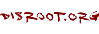
2015
2 GB
Free 接受 内建 Yes
2011
1 GB
Free No 内建 Yes
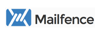
2013
500 MB
Free 接受 内建 Yes
2014
2 GB
12 €
接受 内建 Yes
2009
2 GB
12 €
No 内建 No
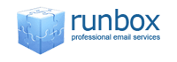
1999
1 GB
$ 19.95
Yes No Yes
2003
1 GB
$ 49.95
接受 内建 Yes
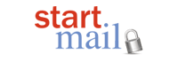
2014
10 GB
$ 59.95
接受 内建 Yes
2010
2 GB
$ 60
接受 No Yes
尚在开发阶段的有趣电子邮供应商
利用 Mail-in-a-Box 来打造自家电邮供应
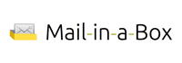
利用这个易于布署的邮件伺服器工具箱，更进一步地掌控自己的电子邮件安全。Mail-in-a-Box 让你透过一些简单的步骤来设置自己的电邮伺服器，就有点像是打造一个自己专属的 gmail。但可以完全由自己从头到尾掌控。技术上来看，Mail-in-a-Box 把新兴的云端电脑变成了一个可工作的邮件伺服器。并不需要技术专家才能作好设定。 进一步资讯请见：https://mailinabox.email/
私密的电邮工具
相关资讯
{% include card.html color='success'
title='Thunderbird'
image='assets/img/tools/Thunderbird.png'
url='https://mozilla.org/thunderbird'
website='mozilla.org'
footer='支援作业系统: Windows, macOS, Linux, BSD.'
description='Mozilla Thunderbird 是一个免费、开源、跨平台的电邮、新闻与聊天软体，由 Mozilla 基金会开发维护。 Thunderbird 是电子邮件、新闻群组、新闻推送订阅与聊天(支援 XMPP, IRC, Twitter)的客户端软体。'
%}
{% include card.html color='primary'
title='Claws Mail'
image='assets/img/tools/Claws-Mail.png'
url='https://www.claws-mail.org/'
footer='支援作业系统: Windows, macOS, Linux, BSD, Solaris, Unix.'
description='Claws Mail 是一个免费开源，使用 GTK 桌面环境为基础的电邮与新闻软体。它提供了简单的设定和丰富的功能，也包括 Windows 底下的加密套件包。'
%}
值得一提
{% include card.html color='success'
title='I2P-Bote'
image='assets/img/tools/I2P.png'
url='https://i2pbote.xyz/'
footer='支援作业系统：Windows, macOS, Linux, Android, BSD / Solaris.'
description='I2P-Bote 是一个完全去中心化的分散式电邮系统。它支援不同的身份识别也不会曝露邮件表头资讯。到 2015 年为止，它仍处在测试版本，可以透过网页介面应用程式或 IMAP 与 SMTP 来取用。所有 bote-mails 电邮是采端对端透明加密或是可以选择利用传送者的私钥进行数位签名。'
%}
{% include card.html color='primary'
title='Bitmessage'
image='assets/img/tools/Bitmessage.png'
url='https://bitmessage.org/'
footer='支援作业系统：Windows, macOS, Linux." description="Bitmessage 是一种端对端的通讯协议，被用来传送加密讯息给单一或多名订阅者。它是去中心化与无信任，其意指用户不必要信任任何根凭证授权的实体。它采用强度高的认证授权，让送件者的讯息无法被欺骗，目的在于能将非讯息内容的资料予以隐藏。'
%}
{% include card.html color='warning'
title='RetroShare'
image='assets/img/tools/RetroShare.png'
url='http://retroshare.net'
footer='支援作业系统：Windows, macOS, Linux.'
description='Retroshare 可建立朋友间的加密通讯连线，没有人可以监控你。Retroshare 是一个完全分散化的设计，这代表着它没有任何中心控制的伺服器。它完全为开源和免费。它没有任何成本、广告或是服务协议。'
%}
如果你目前仍在使用Google、 Bing 或 Yahoo 等搜寻引擎，或许是时候考虑其它的替代选项了。
{% include card.html color='success'
title='searx'
image='assets/img/provider/searx.jpg'
url='https://searx.me/'
tor='http://ulrn6sryqaifefld.onion'
extra_button='
List of Instances '
description='
开源 元搜寻引擎。总合来自其它搜寻引擎的查询结果但不会储存用户的资讯，不留活动记录、无广告也不会追踪。'
%}
{% include card.html color='primary'
title='StartPage'
image='assets/img/provider/StartPage.png'
url='https://www.startpage.com/'
description='它利用 Google 搜寻引擎的查询结果，但有完全的隐私保护措施。StartPage 是一家欧洲公司，自 2006 年创立之初就很重视隐私课题。'
%}
{% include card.html color='warning'
title='DuckDuckGo'
image='assets/img/provider/DuckDuckGo.jpg'
url='https://duckduckgo.com/'
tor='http://3g2upl4pq6kufc4m.onion'
description='不会追踪用户的搜寻引擎。 Some of DuckDuckGo 部份的代码是放在
GitHub 的开源自由授权，但其核心是封闭。
公司所在地是美国。 '
%}
Firefox 火狐附加元件
值得一提
Qwant - Qwant 的理念有二大原则：不追踪用户也没有过滤气泡。Qwant 自 2013 年 2 月从法国起家。进一步了解其隐私政策
MetaGer - 一个开源的元搜寻引擎，其总站位在德国。它关注于保护用户隐私。
如果你目前用的即时通讯是：WhatsApp、Viber、LINE、Telegram 或 Threema，或许是时候考虑找其它替代软体了
{% include card.html color='success'
title='手机：Signal'
image='assets/img/tools/Signal.png'
url='https://signal.org'
footer='支援作业系统：Android, iOS, macOS, Windows, Linux'
description='由 Open Whisper Systems 所开发的手机应用程式。它的所有通讯都予以加密。 Signal 是一套免费开源的软体，任何人都可以审查它的原始码。这个开发团队是靠社群的捐款与奖助，而 Signal 不会插入广告也不须花钱就可以安装使用。'
%}
{% include card.html color='primary'
title='Riot.im'
image='assets/img/tools/riot.png'
url='https://riot.im/'
footer='支援作业系统：Android, iOS, macOS, Windows, Linux, Web'
labels="warning:beta:The software is currently in beta and the mobile client states 'End-to-end encryption is in beta and may not be reliable. You should not yet trust it to secure data."
description='Riot.im 为去中心、基于
Matrix 协定的开源免费聊天应用软体。Matrix 为新进、提供 E2E 加密的即时传通讯开放协定。它可以桥接其它协定，例如 IRC。'
%}
{% include card.html color='warning'
title='桌机：Ricochet'
image='assets/img/tools/Ricochet.png'
url='https://ricochet.im/'
footer='支援作业系统：Windows, macOS, Linux.'
description='Ricochet 利用
来连接联络人而不是依赖讯息伺服器。它会建立一个隐藏的服务，用来与联终人线上会谈而不必揭露出你的来源和位置。不采用一般的使用者名称，用户会拿到一个特别的网址，它长得像这样
ricochet:rs7ce36jsj24ogfw 。而 Ricochet 的其它用户可以利用这个独特的网址来传送加入请求，征求你的同意被加入联络人名单上。'
%}
值得一提
相关资讯
如果你还在使用 Skype、Viber 或 Google Hangouts 这些影音会议即时通讯软体，不妨考虑其它的替代品吧。
{% include card.html color='success'
title='Mobile: Signal'
image='assets/img/tools/Signal.png'
url='https://signal.org'
footer='支援作业系统： Android, iOS, macOS, Windows, Linux'
description='Signal 是由Open Whisper Systems 所开发的手机应用程式。它提供了所有通讯端点到端点之间的加密。Signal 是一套免费开源的软体，任何人都可以审查它的原始码，它无任何广告干援，全靠社群捐款与奖助金收入。'
%}
{% include card.html color='primary'
title='Wire'
image='assets/img/tools/wire.png'
url='https://get.wire.com'
footer='支援作业系统： Android, iOS, macOS, Windows, Linux, Web'
description='Wire 是由WIRE SWISS GmbH所开发的一套应用程式软体。Wire 可让用户交换端对端之间的即时讯息加密以及可以打语音和视讯电话。 Wire 是一个免费开源的软体，让任何人可以透过查核其代码来检查它的安全认证。 它的开发团队受到 Iconical 的支持撑腰，未来有商业化提供付费型升级客户的功能与服务。 关心提醒: 这家公司会保留所有用户的联络人清单，除非用户完全删除自己帐号。'
%}
{% include card.html color='warning'
title='Linphone'
image='assets/img/tools/Linphone.png'
url='https://www.linphone.org/'
footer='支援作业系统： iOS, Android, Windows Phone, Linux, Windows, macOS, Browser (Web)'
description='Linphone 是一个开源 SIP 电话，它可利用网路服务来拨打免费语音电话, 其能运行在手机与桌机环境和网页浏览器。它支援 ZRTP 的端点到端点之间的影像加密通讯。'
%}
值得一提
相关资讯
{% include card.html color='success'
title='OnionShare'
image='assets/img/tools/OnionShare.png'
url='https://onionshare.org/'
tor='http://elx57ue5uyfplgva.onion/'
footer='支援作业系统： Windows, macOS, Linux.'
description='OnionShare 一套开源工具可以安全而匿名地分享档案，没有大小限制。它透过网页伺服器来启动，让自身变成 Tor 洋䓤服务接取的一部份，产生一个无法猜测的网址以用来接取和下载档案。其并不需要在互联网上设定一个伺服器或是使用第三方的档案分享服务。用户可以透过自己的电脑来放置这些档案，再使用 Tor 洋䓤服务以让档案可以透过互联网暂时被存取。'
%}
{% include card.html color='primary'
title='Magic Wormhole'
image='assets/img/tools/Magic-Wormhole.png'
url='https://github.com/warner/magic-wormhole'
footer='支援作业系统： 跨平台
(python) '
description='电脑之间安全地收取档案资料 这个套件提供一个名为虫洞 wormhole 的资料库，其可以在电脑之间取用不限大小的档案与目录资料夹。其电脑间两个终端利用一致虫洞代码 "wormhole codes" 来识别，一般而言，传送端的电脑会产生与颢示这个代码，而接收端电脑则必须输入此代码以进行连接。 此代码很简短且人类可识读，利用发音可区别的文字行。接收端的电脑则在代码字上提供完成分页，因此通常要输入一些字元。虫洞代码仅能使用一次，故不必强记。'
%}
如果你目前使用的是 Dropbox、Google Drive、Microsoft OneDrive 或 Apple iCloud 等云端储存服务，不妨从这里挑选其它替代方案。
{% include card.html color='success'
title='Nextcloud - 自选主机服务'
image='assets/img/provider/Nextcloud.png'
url='https://nextcloud.com／'
footer='支援的客户端作业系统: Windows, macOS, Linux, BSD, Unix, iOS, Android, Fire OS. 伺服器: Linux.'
description='和 Dropbox 有相同的功能，但最大的差异在 Nextcloud 是一套免费而开源的软体，它可让任何人自行架设与操作而不必如私用伺服器那般地收取费用，也没有空间容量或连接客户端数量的限制。'
%}
{% include card.html color='primary'
title='Least Authority S4 - 专家用'
image='assets/img/provider/S4.jpg'
url='https://leastauthority.com/'
footer='支援作业系统：
Linux ,
Windows, macOS, OpenSolaris, BSD. (Installation for advanced users)'
description='S4 (Simple Secure Storage Service) 是 Least Authority 所开发，提供认证与安全的个人或企业用的场外备份系统。在客户端有 100% 的安全加密，而且其程式码开放透明。租用其服务的月费是 $9.95/250GB 或是 $25.95/5TB。 主机是使用美国境内的 Amazon S3 平台伺服器。'
%}
相关资讯
Cryptomator - Free client-side AES encryption for your cloud files. Open source software: No backdoors, no registration.
如果你目前使用的是 Dropbox, Google Drive, Microsoft OneDrive 或 Apple iCloud 等云端储存服务，不妨从考虑自行架设自家的云端系统。
{% include card.html color='success'
title='Pydio'
image='assets/img/tools/Pydio.png'
url='https://pydio.com/'
footer='支援作业系统： Windows, macOS, Linux, iOS, Android.'
description='Pydio 是一款开源的软体，可以立即将任何伺服器（on premise, NAS, cloud IaaS or PaaS）转变成档案共享平台。它可作为 SaaS Boxes/Drives 的替代品，给予用户更多的掌控、安全，隐私保护和有利的成本控管。'
%}
{% include card.html color='primary'
title='Tahoe-LAFS'
image='assets/img/tools/Tahoe-LAFS.png'
url='https://www.tahoe-lafs.org/'
footer='支援作业系统： Windows, macOS, Linux.'
description='Tahoe-LAFS 是一套免费开放，去中心化的云端储存系统。它让用户的资料散布在多台伺服器上，所以即便其中有些伺服器故障出问题或是受到攻击，整个档案储存仍然会继续正常运行，保障用户的安全和隐私。'
%}
{% include card.html color='warning'
title='Nextcloud'
image='assets/img/provider/Nextcloud.png'
url='https://nextcloud.com/'
footer='Client OS: Windows, macOS, Linux, BSD, Unix, iOS, Android, Fire OS. Server: Linux.'
description='和 Dropbox 有相同的功能，但最大的差异在Nextcloud 是一套免费而开源的软体，它可让任何人自行架设与操作而不必如私用伺服器那般地收取费用，也没有空间容量或连接客户端数量的限制。'
%}
{% include card.html color='success'
title='BAHNHOF'
image='assets/img/tools/bahnhof.png'
url='https://www.bahnhof.net/'
description='BAHNHOF 因搭建维基解密 Wikileaks 架站服务供应商"防弹效果"而广为人知。'
%}
{% include card.html color='primary'
title='Colocation: DataCell'
image='assets/img/tools/datacell.png'
url='https://datacell.is/'
description='DataCell 位于瑞士和冰岛的资料中心，提供安全的异地同步保存。'
%}
{% include card.html color='warning'
title='VPS/Web Hosting: Orange Website'
image='assets/img/tools/orange_hosting.png'
url='https://www.orangewebsite.com/'
description='Orange Website 冰岛的网页架站服务商，以其提供的线上隐私与言论保护自豪。'
%}
{% include card.html color='success'
title='SparkleShare'
image='assets/img/tools/SparkleShare.png'
url='https://sparkleshare.org/'
footer='支援作业系统： Windows, macOS, Linux.'
description='SparkleShare 在自己的电脑上建立一个特别的资料夹，用户可把远端主机的资料夹（或专案）存放到这个资料夹底下。这些专案会保持自动与主机以及其它的加入的资料夹同群一起更新档案新增、移除或编辑等最新状态。'
%}
{% include card.html color='primary'
title='Syncthing'
image='assets/img/tools/Syncthing.png'
url='https://syncthing.net/'
footer='支援作业系统： Windows, macOS, Linux.'
description='Syncthing 用来替换商用同步软体与云端服务，它开放、值得信任且去中心化。你的资料就是你的资料，当事人有权选择它要存放在哪里，是否要与其它第三者分享以及资料如何在网路上被传递。'
%}
值得一提
git-annex - 用 git 来管理档案，但不用 git 来检察档案内容。这听起来似乎有点矛盾，但当在处理大型档案上这方法就很好用，尤其是考虑到记忆体大小、时间和硬碟空间。
如果你还在用 1Password, LastPass, Roboform 或 iCloud Keychain 等密码管理软体，或许该考虑从这里挑选另一种工具吧。
{% include card.html color='success'
title='KeePass / KeePassXC - Local'
image='assets/img/tools/KeePass.png'
url='https://keepass.info/download.html'
website='keepass.info'
footer='支援作业系统： Windows, macOS, Linux, iOS, Android, BSD.'
description='KeePass 是一款开源而免费的密码管理工具，有助于用安全的方式来管理各种密码。所有的密码都放在一个资料库下，用主密码或密钥档案上锁。这个资料库会以最安全最佳的加密演算方式，也就是 AES and Twofish 予以加密进行，请一步资料请参见：
KeePassXC 带正式原生的支援 Windows/macOS/Linux 多种作业系统平台。'
%}
{% include card.html color='primary'
title='LessPass - Browser'
image='assets/img/tools/LessPass.png'
url='https://lesspass.com/'
footer='支援作业系统： Windows, macOS, Linux, Android.'
description='LessPass 是一个免费开源的密码管理软体，它可为网站、电邮等需求产生独特的密码，并依靠一个主密码进行管理。不需要同步，使用的是 PBKDF2 与 SHA-256 加密方式。建议使用浏览器附加元件以更加安全。'
%}
值得一提
Master Password - 利用原生的密码产生演算法，保证密码不会遗失。密码不是以储存方式留着:它们依照你的名字、网站和主密码的需求而产生，没有同步，没有备分也不需要网路连线。
Password Safe - 不管答案是 1 还是 100，Password Safe 让你可以安全地建立一个安全又加密的用户与密码清单。利用 Password Safe 你只要记得一组自选的主密码以打开读取这份密码清单。
Bitwarden - 开源、加密的云端密码管理员。若决定采用，请确保使用时关闭 Google Analytics 追踪分析。
相关资讯
若目前有使用行事历与联络人同步服务，如 Google Sync 或 iCloud，这里有其它替代的选项。
{% include card.html color='primary'
title='Email Providers'
image='assets/img/misc/email.png'
url='#email'
website='Email Providers section'
footer='支援作业系统： depends on email provider." description="许多电邮供应商亦提供行事历和联络人同步服务。可参考
电邮供应商 电邮供应商部份的介绍来查看他们是否也有提供此类服务。'
%}
{% include card.html color='warning'
title='EteSync'
image='assets/img/provider/etesync.png'
url='https://www.etesync.com/'
footer='Client OS: Android, Web. Server OS: Linux.'
description='EteSync EteSync 是执行在 Android 或任何支援 CalDAV/CardDAV 作业系统底下的一个安全，端对端加密的日志型个人资讯（例如：行事历与联络人）云端同步备份工具。它的费用是一年 $14 或可免费架在自己的伺服器。'
%}
值得一提
fruux - 结合了联络人和行事历系统，可跨不同平台与多台设备。
Flock - 由 Open Whisper Systems 开始，已未再继续进行的行事历联络人同步服务。虽然它已不同更新，但其原始码 仍可在 GitHub 找到。
cloud backups - 请考处定期汇出行事历与联络人资料备份到不同的储存硬碟或是上传到云端储存 （最好是先予以加密 ）。
如果你尚未对使用中的硬碟、电子邮件或档案库予以加密，你应该赶快从这挑选一个加密软体。
{% include card.html color='success'
title='VeraCrypt - 磁碟加密'
image='assets/img/tools/VeraCrypt.png'
url='https://veracrypt.fr/'
footer='支援作业系统： Windows, macOS, Linux.'
description='VeraCrypt 可取得程式码的免费软体工具，用来进行快速加密。它可以为一个档案建立一个虚拟的加密磁碟、加密磁区或是在开机前授权设定整个设备的硬碟都予以加密。 VeraCrypt 源自目前已无进展的 TrueCrypt 专案。它最初的发布是 2013 年 6 月 23日。据开发者表示，原本 TrueCrypt 程式码在审查后发现的问题已经解决，大幅地改善了安全性。'
%}
{% include card.html color="primary"
title="GNU Privacy Guard - 电邮加密"
image="assets/img/tools/GnuPG.png"
url="https://gpgtools.org/"
footer="支援作业系统： Windows, macOS, Linux, Android, BSD."
description="GnuPG 是采 GPL 授权，替代 PGP 密码学软体套件。GnuPG 可兼容 RFC 4880, 它是一个目前 IETF OpenPGP 标准轨道规格。目前 PGP (以及Veridis' Filecrypt)的版本可以和 GnuPG 以及其它 OpenPGP 兼容系统互交操作。GnuPG 是自由软体基金会GNU 软体专案中的一部份，曾接受德国政府的经费赞助。
GPGTools for macOS ."
%}
{% include card.html color='warning'
title='PeaZip - 档案库加密'
image='assets/img/tools/PeaZip.png'
url='http://www.peazip.org/'
footer='支援作业系统： Windows, Linux, BSD.'
description='PeaZip 是由 Giorgio Tani 所开发的一套免费开源的档案管理与档案库软体。它支援原生的 PEA 档案库格式(特色为压缩、多组磁区分割、弹性化节授权加密和一致的检验格式)以及其它的主流格式。其特别关注在开放格式，目前有支援 181 档案延伸格式 (5.5.1版本).
macOS 替代选项： Keka 是一个免费的档归建软体。'
%}
值得一提
Cryptomator - 免费客户端的云端档案 AES 加密工具。其为开源软体，没有后门也无须注册。miniLock - Google Chrome / Chromium 浏览器的外挂，可用一组密码来加密档案，其开发者来自 Cryptocat。AES Crypt - 使用强力 256-位元的加密演算法，AES Crypt 可以安全地保护最敏感的重要资料档案，可使用在Windows, macOS, Linux 与 Android 平台上。DiskCryptor - 可为 Windows 系统作整颗硬碟或分割磁区的加密系统，包括加密某个分割磁区或是作业系统所安装的硬碟。Linux Unified Key Setup (LUKS) - 使用 dm-crypt 为磁碟加密骨干，可为 Linux 全磁区加密系统。Ubuntu 作业环境提供其为默认设定，也有 Windows 与其它的 Linux 版本可用。
{% include card.html color='success'
title='Tor Browser'
image='assets/img/tools/Tor-Project.png'
url='https://www.torproject.org/'
tor='http://expyuzz4wqqyqhjn.onion'
footer='支援作业系统： Windows, macOS, Linux,
iOS ,
Android ,
OpenBSD. '
description='Tor 网路是由一群自愿营运的伺服器社群，来让人们可以改善其在互联网上的隐私和安全。Tor 用户利用这个网路来连结到一系列虚拟的隧道而不是采直接的连接方式。这样可让组织和个人在公共网路上分享资讯而不会伤害自身的隐私。Tor 也是一个能有效避开网路审查的工具。'
%}
{% include card.html color='primary'
title='I2P Anonymous Network'
image='assets/img/tools/I2P.png'
url='https://geti2p.net/'
footer='支援作业系统： Windows, macOS, Linux, Android, BSD / Solaris.'
description='The Invisible Internet Project (I2P) 是一个电脑网路层，它可让应用程式相互安全化名地传送讯息。它可用匿名的网站浏览、聊天、网志和档案传送。这个软体所执行的这层叫作 I2P 路由，当电脑运行 I2P 时，即称之为 I2P 节点。它是免费开源的软体，其发布版本有多种授权方式。'
%}
{% include card.html color='warning'
title='The Freenet Project'
image='assets/img/tools/Freenet.png'
url='https://freenetproject.org/'
footer='支援作业系统： Windows, macOS, Linux.'
description='Freenet 是一个点对点的平台以进行内容审查的抵抗通讯。它采用去中心化的分散式资料储存来保存和传送资讯，也有自由免费软体套件可以用来在网路上进行发表或是通讯而不必担心审查。自由网和一些它的相关工具一开始是由 Ian Clarke 所设计，他认为自由网的目的乃在于透过顽强的匿名保护，提供互联网的言论自由空间。'
%}
值得一提
如果你还在使用如 Facebook、Twitter 或 Google 的社交网站，不妨从这里挑选一个替代方案。
{% include card.html color='success'
title='Mastodon 长毛象'
image='assets/img/tools/Mastodon.png'
url='https://joinmastodon.org'
website='mastodon.social'
description='Mastodon 基于开放网页协定的自由开源社交网站软体。它如电子邮件的去中心化，包容各式多元(不同兴趣同好的)使用者，外观抢眼容易使用安装。'
%}
{% include card.html color='primary'
title='diaspora*'
image='assets/img/tools/diaspora.png'
url='https://diasporafoundation.org/'
description='diaspora* 基于三大核心哲学：去中心化、自由和隐私。它希望能引起大家关切由中心所控制社交网站下的隐私问题，所以可以让用户自行架设伺服器（或称 "pod"）来控制内容，而各个伺服器可以再自行互动分享动态更新、照片或其它的资料。'
%}
{% include card.html color='warning'
title='Friendica'
image='assets/img/tools/Friendica.png'
url='https://friendi.ca/'
description='Friendica 强调在隐私控制上的仔细设定，它是一个容易安装在伺服器上的软体，以期待尽可能出现更多其它的社交网路联邦。 Friendica 用户可以从 Facebook, Twitter, Diaspora, GNU social, App.net, Pump.io 等等多项社交网路服务来整合其联络人的名单到自己的社交时间轴。'
%}
值得一提
GNU Social - 开源、自由与去中心的社交平台，可与 Mastodon 和 Friendica 相容交流。
相关资讯
{% include card.html color='success'
title='Njalla - 域名注册'
image='assets/img/provider/Njalla.png'
url='https://njal.la/'
tor='http://njalladnspotetti.onion'
description='Njalla 只需要电邮信箱或是一个 jabber 帐户来注册域名。它是由 Pirate Bay 与 IPredator VPN 所创立，其付款方式有：Bitcoin, Litecoin, Monero, DASH, Bitcoin, PayPal, 现金。是一个具隐私意识的域名注册商。'
%}
{% include card.html color='primary'
title='DNSCrypt - 工具'
image='assets/img/tools/DNSCrypt.png'
url='https://dnscrypt.info/'
description='这是一个强化用户端与网域名解析器之间的通讯安全协议。DNSCrypt协议利用高速高安全的椭圆曲线密码学，其有点类似 DNSCurve，但更关注在客户端与第一级解析器之间的连线通讯安全。'
%}
{% include card.html color='warning'
title='OpenNIC - 服务'
image='assets/img/tools/OpenNIC.png'
url='https://www.opennic.org/'
description='OpenNIC 是一个另类的网路资讯中心/或称替代的 DNS 根区，其列名自身是 CANN 与其注册局的替代品。如同其它的替代式根域名系统，采用 OpenNIC-主机的域名无法被其它网路上大多数使用者所造访。只有透过在某个 DNS 解析器上的特殊设定才能让人可以访问，但一般很少有网路服务供应商会作这样的设定。'
%}
值得一提
NoTrack - 一个 DNS 伺服器可以封锁某些追踪网站。目前仅运行在 Debian 与 Ubuntu 的作业系统下。Namecoin - 去中心的 DNS 开源的资讯注册与传送系统，其利用比特币的密码货币所开发的系统。Pi-hole - 树莓派 Raspberry Pi 所用的全网路 DNS 伺服器，可封锁区域网路内所有设备上的广告与追踪域名。
如果你仍然在使用如 Evernote、Google Keep 或 Microsoft OneNote，或许可以考虑尝试这里推荐的软体作替换。
{% include card.html color='success'
title='Joplin'
image='assets/img/tools/Joplin.png'
url='https://joplin.cozic.net/'
footer='支援作业系统： Windows, macOS, Linux, iOS, Android, Firefox/Chrome (Web Clipper).'
description='Joplin 为免费、开源，完全支援作笔记与待办事项清单功能。它可处理大量的 markdown 笔记文件，再依照标签进行分类整理，提供端对端加密且可透过 Nextcloud、Dropbox 等云端服务进行同步。它也提供 Evernote 与其它明文笔记快速汇入功能。'
%}
{% include card.html color='primary'
title='Standard Notes'
image='assets/img/tools/StandardNotes.png'
url='https://standardnotes.org/'
footer='支援作业系统： Windows, macOS, Linux, iOS, Android, Web.'
description='Standard Notes 是一个简单私密的笔记应用程式，可以轻松、随时随地作笔记。它的功能包括了每个平台上端点对端点之间的加密，而其桌面应用则有丰富的主题模版和客制化编辑器。'
%}
{% include card.html color='warning'
title='Turtl'
image='assets/img/tools/Turtl.png'
url='https://turtlapp.com/'
footer='支援作业系统： Windows, macOS, Linux, Android.'
description='Turtl 可以作笔记、网址书签和储存敏感专案的文件。它可让工作伙伴共享密码，追踪你所写的文章。Turtl 让文件保持安全，只有你和有分享权限者可以看到。'
%}
善意提醒
请注意: 自 2018 年 12月后，Joplin 不再支援自身 password/pin 与个别笔记/笔记本保护功能。传输中以及在同步处的数据，仍以主密钥加密方式处理。详情请参考 open issue .
值得一提
Paperwork - 开源、可自行架设的方案，安装于 PHP / MySQL 伺服器。Org-mode - GNU Emacs 主要模式，Org-mode 利用快速有效的明文系统， 可以作笔记、处理待办事预清单、专案规划与作者署文。
{% include card.html color='success'
title='PrivateBin'
image='assets/img/tools/PrivateBin.png'
url='https://privatebin.net/'
description='PrivateBin 是一个迷你、开源的线上原始码储存应用程式，它的伺服器对存入的资料采取零知识证明方式保存，浏览器再透过使用 256bit AES 进行加密和解密，是为 ZeroBin 升级版。'
%}
{% include card.html color='primary'
title='Zerobin.net'
image='assets/img/tools/ZeroBin.png'
url='https://zerobin.net/'
tor='http://zerobinqmdqd236y.onion'
description='Zerobin is 极简化、开源的线上原始码储存应用，其伺服器对储存之数据维持"零知识"(zero knowledge)，浏览器以 256bit AES 加密法来加密、解密资料。'
%}
{% include card.html color='warning'
title='Ghostbin'
image='assets/img/tools/Ghostbin.png'
url='https://ghostbin.com/'
description='Ghostbin 支援伺服器端加密功能和期间限制，授权用户有 1 MB 空间可编写笔记和网路便利贴。用户可建置自己的帐号来追踪自己的剪贴资料。
软体本身不错，但它的网站安全
却令人担忧 。'
%}
值得一提
{% include card.html color='success'
title='Etherpad'
image='assets/img/tools/Etherpad.png'
url='http://etherpad.org/'
footer='支援作业系统： Windows, macOS, Linux.'
description='Etherpad 是一个可以高度自定的开源线上编辑器，它提供了即时的协同编辑功能。Etherpad 可以让你即时地在线上协力编写文件，在你的浏览器上就像是有多名参与者共同在编写一份文章、发布消息或是任务清单等等功能。'
%}
{% include card.html color='primary'
title='Write.as'
image='assets/img/tools/WriteAs.png'
url='https://write.as/'
tor='http://writeas7pm7rcdqg.onion'
footer='支援作业系统： Windows, macOS, Linux, Android, iOS, Chrome OS, Web.'
description='Write.as 为跨平台，重视隐私的网志服务。它预设为匿名，无须注册即可发表文章。如果创建帐号，也不会要求用户提供任何个人资料，无广告、无干扰、基于永续的商业模式。'
%}
{% include card.html color='warning'
title='ProtectedText'
image='assets/img/tools/ProtectedText.png'
url='https://www.protectedtext.com/'
footer='支援作业系统： All Browsers.'
description='ProtectedText 是一开源的网页应用程式，它可以在浏览器上加密与解密文字档案而其密码(或称其杂凑值)绝不会送回到伺服器。 - 因此若密钥和密码则文字内容无法被解密，就算有关当局拿到文字档也没用。它无 cookies，无期间，不用注册也不会对用户进行追踪。'
%}
值得一提
Cryptee - 自由重视隐私的文件、档案与照片储存服务。EtherCalc - 是一个网页版的试算表，其资料存在网页上，使用者可以同一时间在同一个档案上进行编辑而其变动会立即呈现在萤幕上。它可用来作为共用的库存统计、问卷表单、清单管理、脑力激荡等工具。disroot.org - 担提免费友善的 Etherpad, EtherCalc 和 PrivateBin 使用服务。dudle - 是一个线上行程安排的应用程式，其为免费和开源。很方便用来安排会议时间或进行小型的线上调查。它不收集电邮或须注册即可使用。LibreOffice - 免费开源的办公室软体套件。
如果你目前还在使用微软 Windows 或是苹果电脑 OS X 的作业系统，或许该考虑其它替代选项了。
{% include card.html color='success'
title='Qubes OS'
image='assets/img/tools/Qubes-OS.png'
url='https://www.qubes-os.org/'
tor='http://qubesos4rrrrz6n4.onion'
description='Qubes 是一个开源的作业系统，其设计为桌机型电脑提供更坚强的安全保护。Qubes 是以 Xen 为基础， X 视窗系统桌面环境与 Linux。它可以执行大多数的 Linux 应用程式以及适用大部份的 Linux 的硬体效能驱动。'
%}
{% include card.html color='primary'
title='Debian'
image='assets/img/tools/Debian.png'
url='https://www.debian.org/'
tor='http://sejnfjrq6szgca7v.onion'
description='Debian 有点像 Unix 的电脑操作系统，它是 Linux 的发布版本之一，其由自由免费的软体所组成，大部份的软体都是采用 GNU 一般公共授权。有一群人长期地投入 Debian 专案的开发维护。'
%}
{% include card.html color='warning'
title='Trisquel'
image='assets/img/tools/Trisquel.png'
url='https://trisquel.info/'
description='Trisquel 是一个从 Ubuntu 分家出来的 Linux 作业系统。这个专案希望能发展一个完全免费的软体系统而不依靠商用软体或轫体，故其采用 Linux-libre，这是一个 Linux kernel 核心版本，若为非免费的程式码（位元型大型物件 binary blobs）即会被移除。'
%}
警告
值得一提
OpenBSD - 推动免费，多平台，类似像 4.4BSD-based UNIX 的作业系统开发专案。强调可移动性、标准化、正确性、主动安全与整合的密码学系统。Arch Linux - 一套简约、轻量的 Linux 发行版本。它组合了主要的免费和开源的软体，支持社群投入。Parabola 则是 Arch Linux 的全面开源版本。Whonix - 其以 Debian GNU/Linux 为基础，更强调安全关注的 Linux 发行版本。它希望能提供网路上的隐私保护，安全与匿名性。这个作业系统由二个虚拟机器组成，一个是「工作站」一个是 Tor「闸门道」。所有的通讯都被迫要透过 Tor 网路来完成。Subgraph OS - 另一个利用 Debian 基础打造的 Linux 版本，其特色为安全坚固强化以提高弱点攻击的抵抗力。Subgraph 将许多桌面应用程式执行于沙盒环境下以限制程式受到攻击伤害的危险。它预设透过 Tor 网络传送匿名传输流量。请注意，目前本专案仍在半成品阶段，需要更多的测试与纠错修正工作。
{% include card.html color='success'
title='Tails'
image='assets/img/tools/Tails.png'
url='https://tails.boum.org/'
description='Tails 是一个自生作业系统，可以利用 DVD、随身碟或 SD 记忆卡来启动大多数电脑开机。它希望可以保留隐私与匿名，协助人们可以匿名地使用网路以及逃过网路审查，它的网路连结是透过 Tor 网路；不会在用过的电脑上留下使用㾗迹。它使用最新的密码学工具来加密档案，电子邮件和即时通讯。'
%}
{% include card.html color='primary'
title='KNOPPIX'
image='assets/img/tools/KNOPPIX.png'
url='https://www.knopper.net/knoppix/'
description='Knoppix 是一个以Debian为基础的开源作业系统，设计来直接透过 CD / DVD (Live CD) 或USB碟身碟(Live USB)来执行。它是这类自生系统当中的先行者。当开始某个程式时，它会从移动式装置来载入并把它解压缩到随机记忆体上，这佪解压缩过程透明而快速。'
%}
{% include card.html color='warning'
title='Puppy Linux'
image='assets/img/tools/Puppy-Linux.png'
url='http://puppylinux.org/'
description='Puppy Linux 是一个简轻的 Linux 发行版本，其关注于便于使用以及最小化记忆痕迹。整套系统可以透过随机记忆体来执行，目前的版本大约占 210 MB 空间。在启动作业系统后，它可允许移除开机的媒介。'
%}
值得一提
Tiny Core Linux - 小型迷你的作业系统，主要在提供给使用 BusyBox 与 FLTK 的系统利用。这个发行版以其轻量与极简而出名（15 MB），其利用延申套件来提供额外的功能。
虽然以下的作业系统有提供源代码，但安装 Google Apps 可能会伤害设定。依个人的威胁模型状况，MicroG 专案或可作为自由开源软体替代。
{% include card.html color='success'
title='LineageOS'
image='assets/img/tools/LineageOS.png'
url='https://www.lineageos.org/'
description='LineageOS 是一个以 Android 为基础，为手机与平板电脑上的开源作业系统。它依据 Google 所发布的 Android 正式版为开发基础，为一自由开源软体，为 CyanogenMod 专案的延续。'
%}
值得一提
Replicant - 基于安卓的开源作业系统， 希望能更换所有的商用元件以免费软体作取代。OmniROM - 基于 Android 手机平台，可使用在智慧型手机与平板电脑上的自由开源作业系统。MicroG - 旨在 Android 安卓系统上作为商用 Google 商店服务的开源自由软体替代专案。
利用以下 Android 系统附加元件来改善隐私
透过 "NetGuard" 控制流量
NetGuard 提供简便进化的方式来封锁一些应用软体接取网际网路，省去了需取得最高权限的麻烦。应用软体或地址可以个别地被许可或拒绝使用无线或电信数据上网，让你可以控制哪些应用程式可否呼叫主页。
https://www.netguard.me/
下列的附加元件需要取得最高权限，这会让设备更为脆弱危险，请谨慎进行。
利用 XPrivacyLua 管理应用软体权限
自应用程式撤销 Android 权限常会造成软体崩溃或功能失常。XPrivacyLua 利用提供给应用程式假数据来解决此问题。
https://lua.xprivacy.eu/
安装要求: Magisk (xda-developers)
Xposed Framework (xda-developers)
{% include card.html color='success'
title='OpenWrt'
image='assets/img/tools/OpenWrt.png'
url='https://openwrt.org/'
description='OpenWrt 是一套利用 Linux 核心的作业系统(特别是一种「嵌入式」作业系统)，主要用于一些路由网路流量的设备上。它主要的构成是由 Linux 核心，util-linux、uClibc 和 BusyBox。这些元素都已经过尺寸的最佳调适，以符合家用路由器这类的小型设备与其有限的记忆体容量与储存空间。'
%}
{% include card.html color='primary'
title='pfSense'
image='assets/img/tools/pfSense.png'
url='https://pfsense.org/'
description='pfSense 是利用 FreeBSD 所开发的一套用于防火墙/路由器上的开源轫体。它安装在电脑上可变成网路上防火墙/路由器功能，并以其可靠与不输给商用软体的强大功能而著称。pfSense 通常布署在周边的防火墙、路由器、无线接取器、DHCP 伺服器、DNS 伺服器以及 VPN 末端点。'
%}
{% include card.html color='warning'
title='LibreCMC'
image='assets/img/tools/LibreCMC.png'
url='https://librecmc.org'
description='LibreCMC 是 GNU/Linux-libre 电脑版本，其资源需求小，例如像 Ben Nanonote, ath9k-based 无线路由器以及其它强调自由软体的硬体配件。本专案当前目标是依循 GNU 自由系统发布指南(GNU FSDG) 并确保符合自由软体基金会所设下的要求。'
%}
值得一提
OpenBSD - 此乃推动免费，多平台，类似像 4.4BSD-based UNIX 的作业系统开发专案。强调可移动性、标准化、正确性、主动安全与整合的密码学系统。DD-WRT - 利用 Linux 为无线路由器与无线接取器所开发的轫体。它可和多种路由器和接取器模式相容。
微软在 Windows 10 引入了一些新的亮点功能，例如 Cortana。然而大多部分这些东西正在侵害你的隐私权。
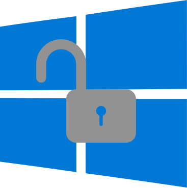
系统默认启动资料同步预设
浏网记录与打开的网站
应用程式设定
WiFi 热点名称和密码
你的机子被预设标记了一个独一的广告识别码
Cortana 可以收集你的任何资料
Microsoft 微软可以收集任何个人资料
你的资料可能被他人使用
下载 Windows 10 时，你授予了微软公司可以将上述资料分享给第三者，不管有无取得你的同意。
下载: W10Privacy
这个工具利用一些已知的方式来设法取消 Windows 10 底下主要的追踪监控功能。
主张你不在意个人隐私的权利因为你无不可告人之处，这就等同于你不在意言论自由因为你没什么事情可说。
美国国安局建置了一套设施，其几乎可以拦截任何通讯。这套设备的能力，大多数人类的通讯都会自动地被吸纳进去而不是针对特定目标。如果我想要看你的电邮内容或是你老婆的电话，我只须要利用这套设备进行拦截，就可以取得你的电子邮件、密码、电信通联记录、信用卡资料等等。我不想活在一个做这种勾当的社会里，我不想要活在一个任何所做的事所说的话都被记录下来的世界。这不是我愿意去支持或是存活下来的地方。
我们都需要有地方可以去探索而不依靠别人施加在我们身上的眼光，只有在一个不必被放大检视的地方我们才可以真正地测试出自己的极限。真正的私领域才能允许不同声音、创造力和个人试探式的谎言。
指南
有用资讯
工具
请注意: 仅仅是开放源代码并不必然保证该软体的安全性！
复制网址与本站描述
为了更轻易地复制与贴上，请利用这个文字小物件作分享
像 privacytools.io 这类的网站能维持跟上时代是一个重要的工作。我们一方面关注这里介绍过的软体是否有更新的消息，也要了解所推荐的服务供应商的新闻。我们试著作出最大的努力但还不够完美，而且互联网每日变化快速。如果你有发现错误或是认为有些服务供应商不宜列上，或是想推荐其它未列出的供应商，或是对浏览器附加元件有所建议.... 请不吝告之我们 。
{% include card.html color="success"
title="在 reddit上提出建议"
image="assets/img/icons/reddit.png"
url="https://www.reddit.com/r/privacytoolsIO/"
website="reddit.com"
description='我们在 reddit 子社群上有一个活跃的社群，上面有最新的讨论与意见交流。立即加入！
(Info) '
%}
{% include card.html color="primary"
title="Follow on Twitter"
image="assets/img/icons/twitter.png"
url="https://twitter.com/privacytoolsIO"
website="twitter.com"
description="从推特取得最新的隐私相关消息，欢迎订阅我们的推特！"
%}
{% include card.html color="warning"
title="GitHub 开发团队"
image="assets/img/icons/github.png"
url="https://github.com/privacytoolsIO/privacytools.io"
website="github.com"
description="本网站的原始码寄放在 GitHub，欢迎加入我们的开发团队！"
%}
这是一个社群计划，我们希望能献上关于更好隐私作法的最佳资讯。感谢你们的参与，这个计划正需要大家一起来协助。
WTFPL
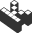kopimi (copyme)
捐款: 1N4bKCx3kpvUTBhsvbmthPDssN8ATPEhgt 或是使用 PayPal.
privacytools.io 是一个为社会现况激发的社群网站，它提供保护上网者资料安全的资讯。不要信任任何一家公司会善待保护隐私，时时刻刻作好加密防备。